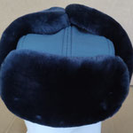
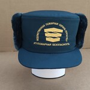
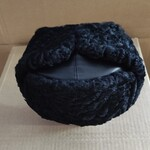

Шапка-ушанка меховая для сотрудников МЧС РФ

.jpg)
Стоимость 1450 рублей.
ТО МЧС России
Шапка-ушанка меховая для сотрудников ОВД РФ/ДПС ГИБДД МВД России
Стоимость 1450 рублей.
ТУ 8931-307-08836809-2021 (взамен ТУ 8931-045-08836809-2008)
ТУ 8931-305-08836809-2020
Шапка меховая женская для сотрудников ОВД РФ
Стоимость 2200 рублей.
Шапка-ушанка меховая для сотрудников ОВД РФ (верх-сукно)
Стоимость 1100 рублей.
ТУ 8931-045-08836809-2008 изв. 1
Шапка-ушанка меховая для военнослужащих МО (верх-сукно)
Стоимость 1100 рублей.
ТУ 858-6101-2010 изв. 1
Шапка-ушанка для воспитанников кадетских корпусов
Стоимость 1100 рублей.
ТУ 858-6100-2010
Шапка-ушанка меховая для военнослужащих ВМФ (верх-кожа)
Стоимость 2200 рублей.
ТУ 858-6100-2010
Головной убор женский "Кубанка" из овчины меховой (верх-кожа)
Стоимость 2200 рублей.
ГОСТ 10325-79
Головной убор женский "Кубанка" из овчины меховой (верх-сукно)
Стоимость 1150 рублей.
ГОСТ 10325-79
Шапка-ушанка из овчины облагороженной для МПС со звукопроводящими вставками
Стоимость 1500 рублей.
ТО 17-20-672-82-03 ГОСТ № 10325-79
Шапка-ушанка с козырьком "Летная" (овчина меховая комбинированная с
натуральной кожей)
Стоимость 2000 рублей.
Шапка-ушанка со звукопроводящими вставками "Молодежная"
Стоимость 1200 рублей.
Шапка-ушанка из искусственного меха с верхом из сукна/иск. кожи
Стоимость 970 рублей.
ТУ 858-6102-2010 изв. 1
Кепи комбинированная с тканью из овчины облагороженной с козырьком
Стоимость 1100 рублей.
ТУ 8385-08894280-024-06
Кепи из искусственного меха для пожарной охраны ГК "РОСТЕХ"

Стоимость 1100 рублей.
Шапка из искусственного каракуля женская
Стоимость договорная.
Шапка из искусственного каракуля мужская для охранных структур
Стоимость договорная.
Шапка из искусственного каракуля (верх-сукно)
Стоимость 1500 рублей.
Папаха из каракуля
Стоимость 10000 рублей.
ТУ 858-5824-2005
Шапка-ушанка из каракуля с верхом из сукна
Стоимость 9000 рублей
ТУ 8931150-058-46086219-05
Воротник из каракуля для военнослужащих
Стоимость 7000 рублей.
ТУ 858-6116-2010 изв. 1, тип А, Б, В
Шапка из каракуля комбинированная с кожей, с вшитым козырьком для МЧС
Стоимость 10000 рублей.
ТУ 858-5825-2005 изв. 1
Шапка из каракуля для капитанов I ранга, полковников, адмиралов и генералов
ВМФ
Стоимость 10000/23000 рублей.
ТУ 858-5825-2005 изв. 1
Шапка из каракуля для полковников и генералов МЧС
Стоимость 21000 рублей.
ТУ 858-5825-2005 изв. 1
Шапка из каракуля комбинированая с кожей с вышитым козырьком для высшего
командного состава
Стоимость 18500 рублей.
Шапка-ушанка цельномеховая из каракуля
Стоимость 13500 рублей.
ТУ 8931150-058-46086219-05
Шапка-ушанка из чёрного каракуля, верх кожа

Стоимость 9000 рублей.
ТУ 8931-159-08836809-2011
Шапка из каракуля женская для сотрудников ОВД РФ
Стоимость 10000 рублей.
Шапка из каракуля женская для высшего командного состава
Стоимость 11000 рублей.
Шапка-ушанка комбинированная с кожей, для сотрудников ОВД РФ
Стоимость 10000 рублей.
ТУ 8931-159-08836809-2011
Воротник меховой из натуральной овчины облагороженной
Стоимость 900 рублей.
ТУ 858-5805-2005 ТУ 858-6116-2010
ТУ 8941-048-08836809-2008 ТУ 8385-08894280-024-06
Рукавицы крытые тканью
Стоимость 850 рублей.
ГОСТ 26577-85 тип А, Б-1, Б-2
.jpg)
.jpg)
.jpg)
.jpg)
.jpg)
.jpg)
.jpg)
.jpg)
.jpg)
.jpg)
.jpg)
.jpg)
.jpg)
.jpg)
.jpg)
.jpg)
.jpg)
.jpg)
.jpg)
.jpg)
.jpg)
.jpg)
.jpg)
.jpg)
.jpg)
.jpg)
.jpg)
.jpg)
.jpg)
.jpg)
.jpg)
.jpg)
.jpg)
.jpg)
.jpg)
.jpg)
.jpg)
.jpg)
.jpg)
.jpg)